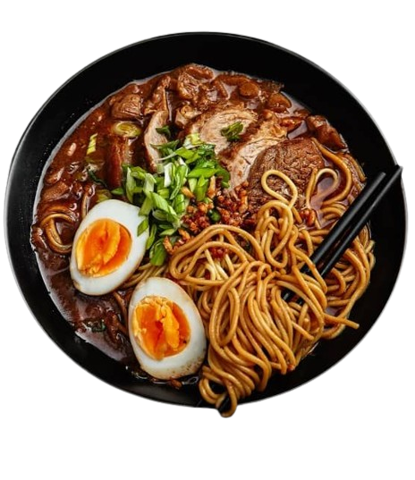

Ramen
It typically consists of wheat noodles served in a flavorful broth, often accompanied by a variety
of
toppings. Here's a breakdown of its components:
------------
any category of the food could be modified and have a wide range a food , this refer to the owner of
the cook book demand
------------
any category of the food could be modified and have a wide range a food , this refer to the owner of
the cook book demand